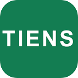
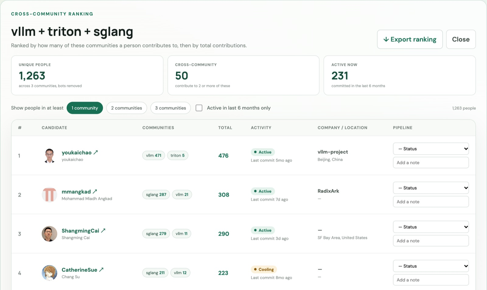

2025 – Now
Executive Searching Recruiter
Huawei Canada · Vancouver
Leading AI research recruitment strategy (LLMs, Multimodal). Building pipelines from top conferences (ICCV, NeurIPS).
Global Technical & Science Recruiter · AI/ML, LLMs, Engineering
Ten years of hiring across AI, biotech, and global markets, from Jakarta and New Delhi to Boston and Vancouver.
Leading AI research recruitment strategy (LLMs, Multimodal). Building pipelines from top conferences (ICCV, NeurIPS).
AI-driven sourcing for SaaS startups across North America and APAC.
Scaled Series B startup from 85 to 150 headcount. Hired niche ML Engineers and Scientists.
Redesigned recruitment workflows using Lean Six Sigma, reducing time-to-hire.
 Jun – Aug 2019
Jun – Aug 2019Managed HR operations across 8 countries. Built sales teams from scratch in New Delhi.

2015 – 2018Sourcing tools I build for myself, to find people by the work they publish.
Finds AI engineers through the open-source code they ship.
Turns a hiring brief into searches across all of GitHub, ranks people across several communities at once (such as vLLM, SGLang and Triton), shows who is still committing, and profiles what each person actually changes, with technical tags that link to the supporting pull requests. Runs locally, with no paid AI services.

A searchable pool of ML researchers built from conference papers and citations. Collects authors from ML conferences, expands through Semantic Scholar and CSRankings, verifies GitHub identities, maps co-author networks, and lets AI assistants query the pool through an MCP server that hides contact details by default.
Candidates and interviewers mark when they're free on a weekly calendar from a shared link, with no accounts. It ranks the slots that work for everyone across time zones and keeps responses across browsers and restarts.
Six countries in ten years. Tap a stop to jump there.
I volunteer my time to help job seekers and scientists see hiring from the recruiter's side, usually for audiences of 100+.


Shared how candidates can stand out in North American interviews, from a recruiter's point of view.
Coached scientists on answering "Tell me about yourself" in under three minutes, and on using small talk to set a relaxed, equal tone with the interviewer.
Spoke on hiring and career growth as Talent Acquisition Partner at Cellarity (Flagship Pioneering).
Hiring AI talent, or exploring your next role? Write to fionacuicareer@gmail.com.